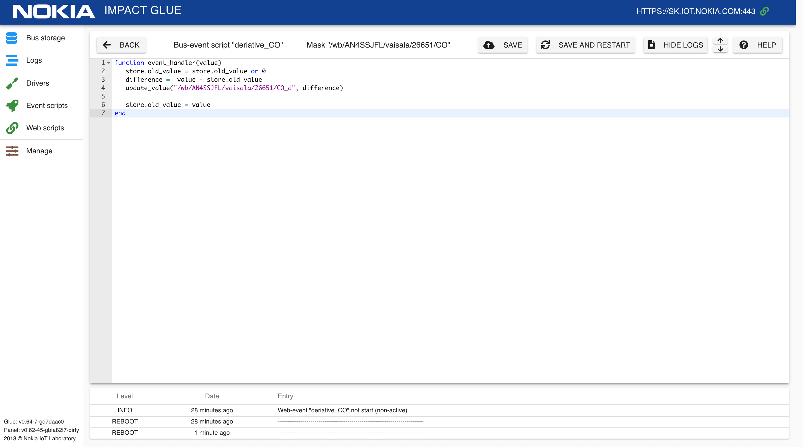

Примеры bus-event скриптов
Расчет скорости роста параметра
Пример кода, который прослушивает изменение показаний концентрации угарного газа CO на климатической станции и обновляет значение приращения этого значения для отслеживания динамики:
function event_handler(value)
store.old_value = store.old_value or 0
difference = value - store.old_value
set_value("/wb/AN4SSJFL/vaisala/26651/CO_d", difference)
store.old_value = value
end
